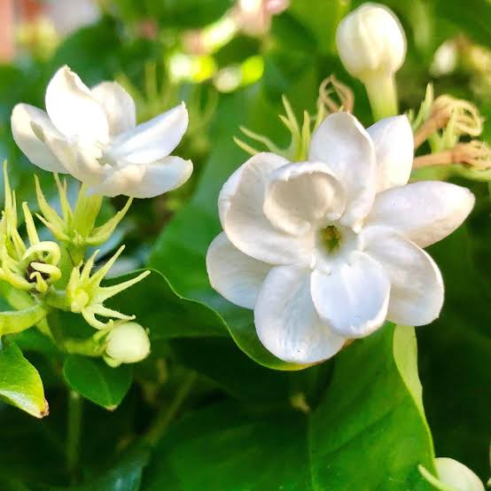

Jasmine is used on the skin to reduce the amount of breast milk, for skin diseases, and to speed up wound healing. Jasmine is inhaled to improve mood, reduce stress, and reduce food cravings. In foods, jasmine is used to flavor beverages, frozen dairy desserts, candy, baked goods, gelatins, and puddings.
The main reason jasmine is so famous is its strong fragrance.
Uses
Jasmine is used on the skin to reduce the amount of breast milk, for skin diseases, and to speed up wound healing.
In foods, jasmine is used to flavor beverages, frozen dairy desserts, candy, baked goods, gelatins, and puddings.
Jasmine has been used for liver disease (hepatitis), pain due to liver scarring (cirrhosis), and abdominal pain due to severe diarrhea (dysentery). It is also used to prevent stroke, to cause relaxation (as a sedative), to heighten sexual desire (as an aphrodisiac), and in cancer treatment.